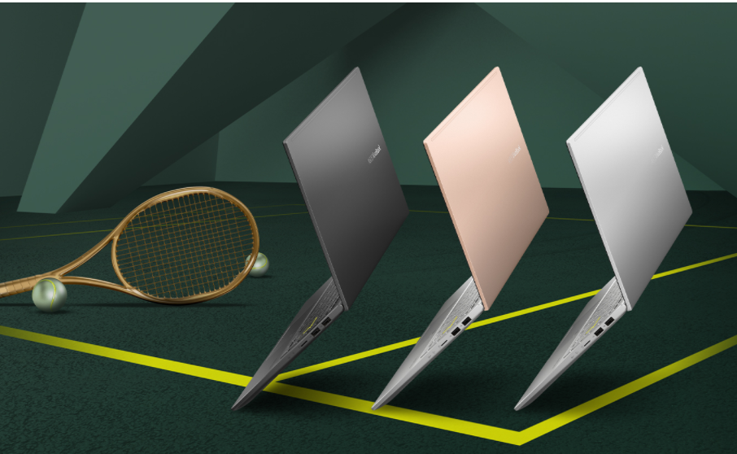
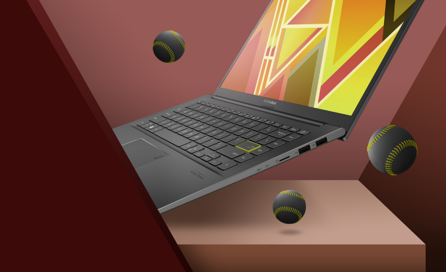

CÔNG NGHỆ
ASUS Vivobook 2021 có những gì!?!Những thay đổi mạnh mẽ đến từ hãng
Cuối năm 2020, đầu năm 2021, ASUS chính thức cho ra mắt dòng laptop văn phòng ASUS Vivobook A15 tại thị trường Việt Nam. Đây là chiếc laptop được đánh giá có nhiều thay đổi, chủ yếu ở cấu hình máy để nhắm đến giới sinh viên và văn phòng. Là dòng máy phổ thông với mức giá cực dễ chịu, chỉ từ hơn 15 triệu nhưng dòng laptop này được hãng trang bị Intel® Gen 11th hiện đại, mạnh mẽ, hứa hẹn không chỉ đáp ứng tốt nhu cầu thông thường của người dùng mà còn có thể sử dụng để chơi game. Chính vì vậy mà đây sẽ là thiết kế giới trẻ rất ưa chuộng.
CẤU HÌNH VÀ THÔNG SỐ CHUNG
- CPU - Intel - Gen 11th
- RAM - 8GB DDR4 Onboard
- Ổ cứng - SSD 512GB PCIe (1 slot)
- Card VGA - Intel® Iris® Xe Graphics
- Màn hình - 15.6-inch FHD IPS (1920 x 1080), viền mỏng chống chói
- Kết nối - Wi-Fi 6 (2x2) 802.11ax + Bluetooth 5.0
- Cổng giao tiếp - 2 x cổng USB 2.0, 1 x Kiểu A USB 3.1, 1 x Kiểu C USB3.0, 1 x HDMI, 1 x Thẻ micro SD, 1 x Jack Âm thanh COMBO, 1 x Harman Kardon Audio, 1 x FingerPrint vân tay
- Bàn phím - Chiclet keyboard
- Pin - 42 WHrs Li-ion Battery
- Hệ điều hành - Windows 10 bản quyền
HIỆU NĂNG
- Trang bị CPU Intel® gen 11th, Asus Vivobook A15 mang tới sức mạnh bạn cần để hoàn thành mọi nhiệm vụ. Cùng với đó là RAM DDR4 giúp máy tính của bạn đủ hiệu năng bạn cần để xử lý mọi tác vụ. Thiết bị cũng đi kèm ổ SSD M.2 PCIe, dung lượng lớn cho phép lưu trữ siêu nhanh. Với những thông số trên có thể thấy Asus Vivobook thực sự là một "chú ngựa chiến" mạnh mẽ giúp người dùng xử lý công việc nhanh chóng.
- Hướng đến đối tượng chủ yếu là sinh viên, giới văn phòng trẻ nên Asus trang bị cho dòng máy này Card VGA Intel® UHD Graphicsvừa đủ để người dùng có thể thiết kế hình ảnh 2D đơn giản. Tuy nhiên khi bật nhiều ứng dụng thiết kế cùng lúc sẽ có thể bị giật, lag.
THIẾT KẾ
Làm việc năng suất, thiết kế thời thượng chính là câu châm ngôn của Asus Vivobook. Điều này dễ dàng được giải thích bởi thiết bị này mang đến sự tinh tế, năng động trong thiết kế của mình. Tuyên ngôn về việc sử dụng laptop cho thế hệ Gen 11th, VivoBook A15 chọn thiết kế với nắp kim loại mỏng, mịn, và tinh giản đã tạo ra chuẩn mực mới về laptop văn phòng. Màu sắc cũng tạo nên sự nổi bật của máy, tuy nổi bật nhưng vẫn thời thượng, sang trọng.
MÀN HÌNH (LCD)
- Với Vivobook A15, bạn có thể đắm chìm vào thế giới hình ảnh nhờ viền màn hình siêu mỏng NanoEdge mang đến trải nghiệm nhìn rộng rãi hơn, màn hình lớn hơn trong khung máy nhỏ hơn. Màn hình Full HD mang đến góc nhìn rộng và tái hiện màu sắc chân thật cho hình ảnh sống động hơn bao giờ hết. - Màn hình của A15 to 15.6 inch FHD (1920x1080), viền mỏng, chống chói giúp bạn thoải máy sử dụng nó ở bất cứ không gian nào, từ văn phòng đến quán cà phê ngoài trời...
KEYBOARD & TOUCHPAD
Thay vì sử dụng bàn phím một màu đơn điệu, thì Vivobook A15 có bàn phím cực kì phá cách, bật nên cá tính của người dùng nhờ phím Enter có viền vàng Neon.
Hành trình phím chỉ 1,4mm cho khả năng gõ phím chính xác cực cao, bạn có thể thao tác nhấn phím nhanh liên tục vô cùng thoải mái nhờ độ nảy của phím. Ngoài ra, bàn phím fullsize với đèn nền cũng hỗ trợ người dùng có thể đánh máy trong điều kiện thiếu sáng.
Cảm biến bằng vân tay chính là xu hướng thiết kế laptop hiện nay, nhờ khả năng mở khóa nhanh, bảo mật cao. Đối với Asus Vivobook, bảo mật vân tay được đặt trên touchpad vừa thuận tiện, lại thời trang. Chỉ cần 1 chạm bạn đã có thể mở khóa laptop của mình mà không cần phải gõ một chuỗi kí tự, đặc biệt là khi quên mất mật khẩu. Ngoài ra, khi lướt tay trên touchpad sẽ thấy rất nhạy và mượt mà, nếu người dùng muốn gọn nhẹ thì chỉ cần mang theo máy chứ không cần sử dụng thêm chuột nữa.
KẾT LUẬN
Asus Vivobook A15 là một công cụ tuyệt vời để bạn có thể vừa làm việc, vừa học tập, vừa giải trí. Là chiếc laptop văn phòng với mức giá phổ thông chỉ từ 13 triệu đồng, nó thực sự rất dễ mua và sử dụng. Đặc biệt, máy sử dụng CPU gen 11 mới nhất nên bạn hoàn toàn có thể yên tâm về sự mượt mà trong hiệu năng của máy.